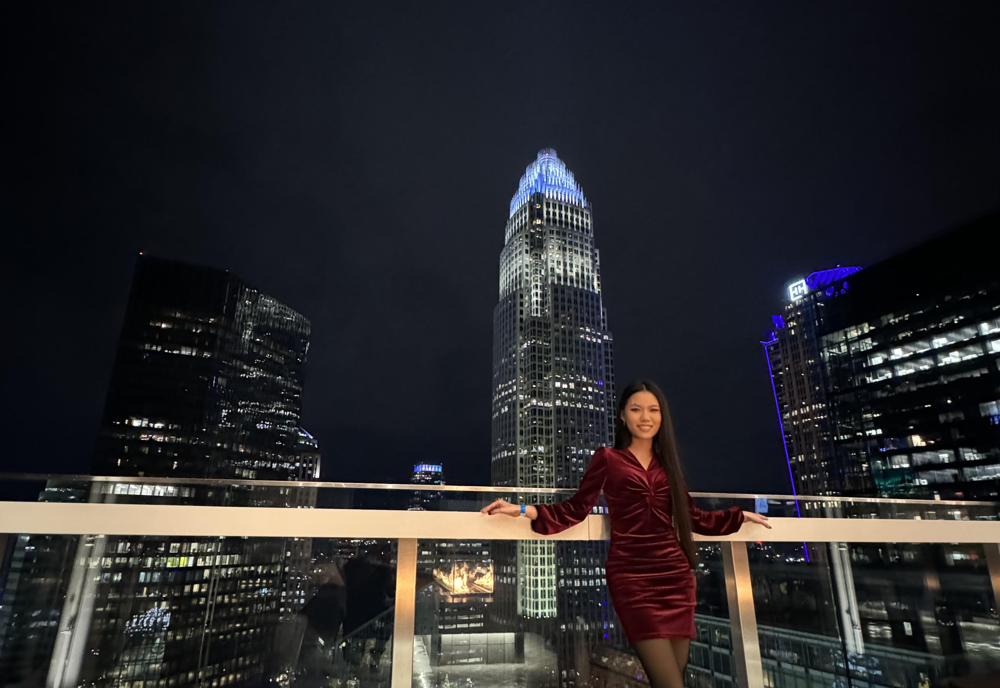

INTRODUCTION

in front of Charlotte's skyline
- Personal background: I moved to Charlotte when I was 10 years old, I have been living here ever since.
- Professional background: I worked as a licensed nail technician during the summer after high school, before attending university.
- Academic background: I attended UNCC for 2 years in a different field.
- Background in this subject: I took WEB 115 last semester.
- Primary Computer Platform: Windows 11 (laptop).
- Courses I'm Taking & Why:
- WEB215 - Adv Markup and Scripting: Major Requirement
- DBA120 - Database Programming I: Major Requirement
- CTS240 - Project Management: Major Requirement
- CSC221 - Advanced Python Programming: Major Requirement
- CTS118 - IS Professional Communication: Major Requirement
- Funny/Interesting Item about Yourself: I spend most of my money feeding stray/feral animals.
- I'd also like to Share: I enjoy working out and running at the park.